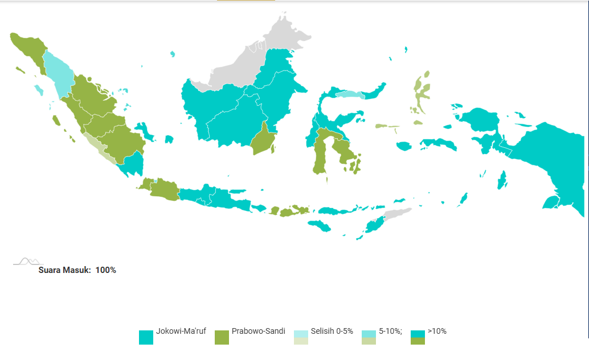

Hasil Pemilihan Presiden Indonesia 2019

| NO |
KOTA |
Jokowi - Ma'ruf |
Prabowo - Sandi |
Total Suara |
| 1 |
Aceh |
404,188 |
2,400,746 |
2,804,934 |
| 2 |
Sumatera Utara |
3,936,515 |
3,587,786 |
7,524,301 |
| 3 |
Sumatera Barat |
407,761 |
2,488,733 |
2,896,494 |
| 4 |
Riau |
1,248,713 |
1,975,287 |
3,224,000 |
| 5 |
Kepulauan Riau |
550,692 |
465,511 |
1,016,203 |
| 6 |
Jambi |
859,833 |
1,203,025 |
2,062,858 |
| 7 |
Bengkulu |
583,388 |
558,999 |
1,142,387 |
| 8 |
Sumatera Selatan |
1,942,987 |
2,877,781 |
4,820,768 |
| 9 |
Bangka Belitung |
495,729 |
288,235 |
783,964 |
| 10 |
Lampung |
2,853,585 |
1,955,689 |
4,809,274 |
| 11 |
Banten |
2,537,524 |
4,059,514 |
6,597,038 |
| 12 |
Jawa Barat |
10,750,568 |
16,077,446 |
26,828,014 |
| 13 |
Jawa Tengah |
16,825,511 |
4,944,447 |
21,769,958 |
| 14 |
Yogyakarta |
1,655,174 |
742,481 |
2,397,655 |
| 15 |
Jawa Timur |
16,231,668 |
8,441,247 |
24,672,915 |
| 16 |
Bali |
2,351,057 |
213,415 |
2,564,472 |
| 17 |
Nusa Tenggara Barat |
951,242 |
2,011,319 |
2,962,561 |
| 18 |
Nusa Tenggara Timur |
2,368,982 |
305,587 |
2,674,569 |
| 19 |
Maluku |
599,457 |
392,940 |
992,397 |
| 20 |
Maluku Utara |
310,548 |
344,823 |
655,371 |
| 21 |
Kalimantan Barat |
1,709,896 |
1,263,757 |
2,973,653 |
| 22 |
Kalimantan Tengah |
830,948 |
537,138 |
1,368,086 |
| 23 |
Kalimntan Utara |
248,239 |
106,162 |
|
| 24 |
Kalimantan TImur |
1,094,845 |
870,443 |
|
| 25 |
Kalimantan Selatan |
823,939 |
1,470,163 |
|
| 26 |
Sulawesi Selatan |
2,117,591 |
2,809,393 |
4,926,984 |
| 27 |
Sulawesi Tenggara |
555,664 |
842,117 |
1,397,781 |
| 28 |
Sulawesi Barat |
475,312 |
263,620 |
738,932 |
| 29 |
Sulawesi Tengah |
914,588 |
706,654 |
1,621,242 |
| 30 |
Gorontalo |
369,803 |
345,129 |
714,932 |
| 31 |
Sulawesi utara |
1,220,524 |
359,685 |
1,580,209 |
| 32 |
Papua Barat |
508,997 |
128,732 |
637,729 |
| 33 |
Papua |
3,021,713 |
311,352 |
3,333,065 |